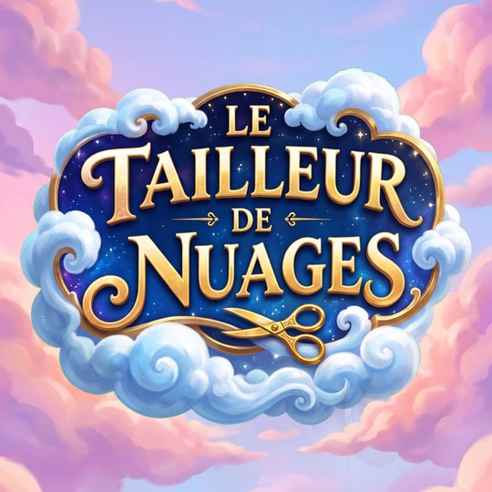

Le Tailleur de Nuages
Min bɛ fɛ ka sɔrɔ
- Nivo 240 mara 12 kɔnɔ
- Hɛrɛma, waati tɛ
- Jatebɔsɛbɛn tɛ wajibi ye, i bɛ se ka tulon kɛ ni ɛntɛrinɛti tɛ

A na na kɔrɔ iPhone ni Android kan
Sankabaw tigɛ, sira yɛlɛ.
A na na kɔrɔ Android kanGunw bɛ pan sankolo la ani da dabali la dɔ bɛ makɔnɔ. Sankabaw tigɛ, u munumunu ka u bila walasa ka karalikɛla fitini ka sira jɔ.
Nivo 240 mara 12 jalen kɔnɔ, waati tɛ. Dolo 3 sɔrɔ, kɛsuw yɛlɛ ka sankabaw lajɛ.
Le Tailleur de Nuages na na kɔrɔ App Store kan iPhone ye ani Android kan. Zɔrɔ bɔtɔni na bɔ nin ɲɛ sanfɛ a bɔ waati min na.
Le Tailleur de Nuages
I-meyili an ma: contegamesstudio@gmail.com